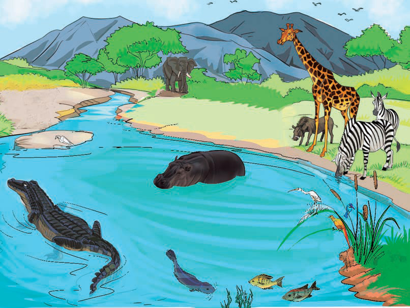

things that have no life.Examples of non-living things are a stone, a car, a mountain and
house.
Activity 1
(a) Study Figure 1 and its description, then mention the things you have studied.
(b) Use different sources of information, including library and online sources to explore various living and non-living things.

Figure 1: Living and non-living things in the environment